Chapter 7 – CCNA 2
01.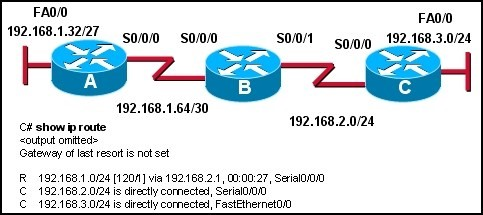 Refer to the exhibit. If all routers are running RIP version 2, why is there no route for the 192.168.1.32/27 network?
- Rip version 2 does not send subnet masks in its updates.
- Router A is not setup with RIP as a routing protocol.
- Rip version 2 will auto summarize routes by default.
- Router B is not setup to advertise the 192.168.1.64/30 network.
02. What are two functions of the network command used when configuring routing protocols? (Choose two.)
- identifies which networks will be included in the routing updates;
- identifies the hosts addresses that can be summarized in the network;
- used to list all addresses for remote and local networks;
- determines which subnet mask to apply to routing updates;
- determines which interfaces can send and receive routing updates;
03. What is the maximum network diameter permitted by the default metric of RIPv2?
- 16 hops
- 15 hops
- 100 hops
- 120 hops
- 255 hops
04. A network administrator has been told that the company IP address infrastructure must adhere to RFC 1918. What three IP address ranges from RFC 1918 could the administrator use on the network? (Choose three.)
- 10.0.0.0/8
- 127.0.0.0/8
- 169.254.0.0/16
- 172.16.0.0/12
- 192.168.0.0/16
- 209.165.201.0/27
05. How are RIP v1 and RIP v2 similar to one another? (Choose three.)
- They both use hop count as a metric.
- They both have the same metric value for infinite distance .
- They both use a broadcast IP address to send updates to their neighbors.
- They both send subnet mask information in their updates.
- They both provide for authentication of update sources.
- They both use split horizon to prevent routing loops.
06.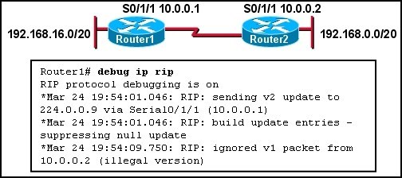 Refer to the exhibit. Which command on which router will allow Router1 to learn about the 192.168.0.0/20 network?
- Router1(config)# ip classless
- Router1(config-router)# no passive-interface serial 0/1/1
- Router2(config-router)# version 2
- Router2(config-router)# neighbor 10.0.0.2
07.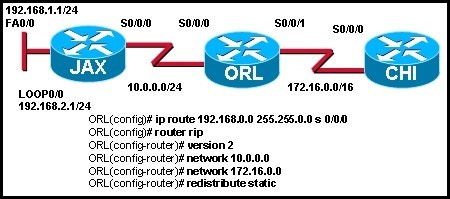 Refer to the exhibit. All routers are running RIP version 2. JAX is configured to just advertise the 10.0.0.0/24 network. CHI is configured to advertise the 172.16.0.0/16 network. A network administrator enters the commands shown in the exhibit. What changes will occur in this network?
- The JAX router will ignore updates for the 172.16.0.0/16 network due to split horizon issues.
- The CHI router will install a route to the 192.168.0.0/16 network in its routing table.
- The routing table for CHI will have the 192.168.0.0/16 route but it will have an S next to the route.
- The ORL router will apply a 255.255.0.0 subnet mask to all networks in the routing updates it forwards.
08.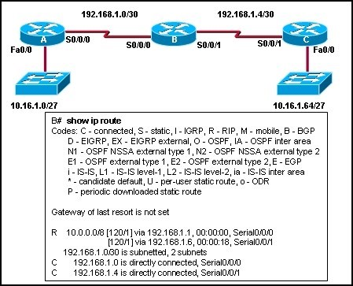 Refer to the exhibit. All routers are running RIPv1. What changes will occur in the routing table of router B if a loopback interface with an address of 10.16.1.129/27 is configured on router B?
- Routes to the 10.16.1.0/27, 10.16.1.64/27, and 10.16.1.128/27 networks are added.
- A connected route to the 10.16.1.128/27 network is added.
- A third route to the 10.0.0.0/8 network with RIPv1 as the source is added.
- The 10.0.0.0/8 route is dropped immediately from the routing table after router B is configured.
09. 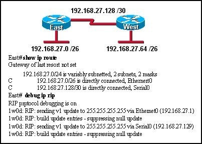 Refer to the exhibit. Routers East and West are configured using RIPv1. Both routers are sending updates about their directly connected routes. The East router can ping the West router serial interface and West can ping the serial interface of East. However, neither router has dynamically learned routes from the other. What is most likely the problem?
- A gateway of last resort is required.
- Subnetting is not supported by RIPv1.
- VLSM is not supported by RIPv1.
- One of the routers needs a clock rate on the serial interface.
10.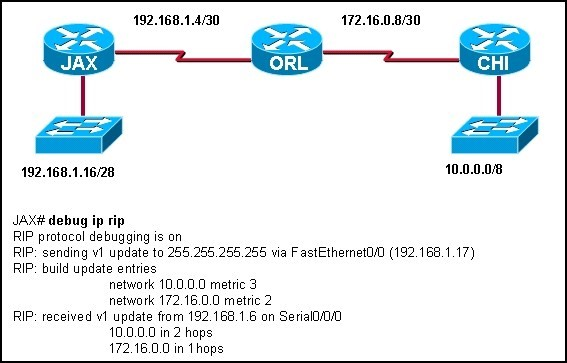 Refer to the exhibit. The exhibited network contains a mixture of Cisco and non-Cisco routers. The command debug ip rip was entered on the JAX router. All routers are running the same version of RIP. Router CHI and Router ORL are not able to reach the 192.168.1.16/28 network. What is a possible solution to this problem?
- Enable split horizon in the network.
- Configure RIPv2 on routers.
- Add network 192.168.1.0 to the RIP configuration on the JAX router.
- Configure JAX Fa0/0 as a passive interface.
- Enable the Serial0/0/0 interface on the JAX router.
- Change the IP address on the Fa0/0 interface of the JAX router to 192.168.1.1/24.
11.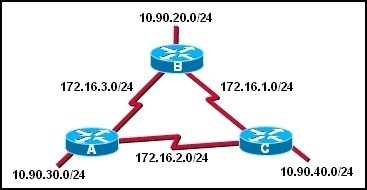 Refer to the exhibit. RIPv1 is configured as the routing protocol for the network that is shown. The following commands are used on each router:
- router rip network 10.0.0.0
- network
- 172.16.0.0
When this configuration is complete, esers on the LAN of each router are unable to access the remote LAN,s. Why ?
- The network statements are configured incorrectly;
- A routing loop has been created;
- RIPv1 is unable to route to discontiguos subnets of a major network;
- RIPv1 is unable to route networks with a /24 subnet mask.
12. RIPv2 is the configured routing protocol on the routers in a network. The command Router(config-router)# no version 2 is entered on the routers. What effect does entering this command have on routing updates?
- Subnet masks will be added to the routing updates.
- Routing updates will be sent out using multicast address 224.0.0.9.
- Version 1 and 2 updates will be received and the version 2 updates will not be sent.
- The RIP routing process will be removed from the router and routing updates will not be forwarded.
13. A network administrator installed four new routers that are running RIPv2. Router1 is a boundary router in the RIPv2 network and has a default route configured. Once the network has converged, the network administrator enters Router1(config-router)# default-information originate on Router1. How will this affect the network?
- prevents Router1 from forwarding updates about networks that are not directly connected;
- causes all routers in the network to synchronize routing updates with Router1;
- forces Router1 to become the primary or designated router (DR) for updates;
- propagates the default route to all routers in the network;
14.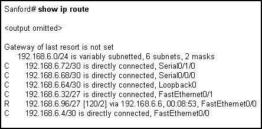 Refer to the exhibit.A technician needs to add a new loopback interface to test routing functionality and network design. The technician enters the following set of commands on the router:
Sanford(config)# interface loopback1
Sanford(config-if)# ip address 192.168.6.62 255.255.255.252
Why does the router respond with an error?
- The router does not allow loopback interface configurations.
- This mask can not be used with this class of addresses.
- Classless routing must be configured before this address can be added.
- The network address for Loopback1 overlaps with an already configured interface address.
- The router is over the limit for the maximum paths that can be provided in the routing table.
15.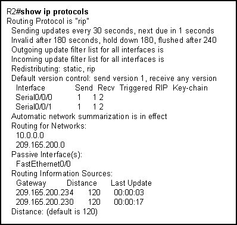 Refer to the exhibit.What can be concluded from the output shown in the exhibit?
- The routing table is limited to 2 routes.
- The LAN interfaces are participating in the routing process.
- One update has been sent out of each serial interface and 2 have been received.
- The no auto-summary has not been configured on this router.
16.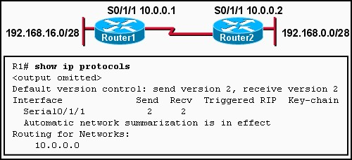 Refer to the exhibit. Which command will allow Router2 to learn about the 192.168.16.0/28 network?
- Router1(config)# ip classless
- Router1(config-router)# network 192.168.16.0
- Router1(config-router)# no passive-interface serial 0/1/1
- Router2(config-router)# version 2
- Router2(config-router)# neighbor 10.0.0.2
17. What are two reasons to implement RIP version 2 rather than RIP version 1? (Choose two.)
- RIP version 2 supports VLSM.
- RIP version 2 supports more than 16 routers.
- RIP version 2 supports classful (and not classless) routing.
- RIP version 2 supports routing update authentication.
- RIP version 2 supports multi-areas.
- RIP version 2 uses the Dijkstra algorithm rather than the Bellman-Ford algorithm.
18. What field was added to the RIP message header by RFC 1723 to add support for VLSM and CIDR?
- subnet mask;
- destination port number;
- address family identifier;
- source and destination IP addresses;
19.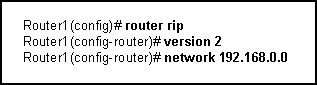 Refer to the exhibit. What effect will the commands that are shown have on RIP updates for Router1?
- Only version 2 updates are sent to 255.255.255.255.
- Only version 2 updates are sent to 224.0.0.9.
- Both version 1 and version 2 updates are sent to 224.0.0.9.
- Both version 1 and version 2 updates are sent to 255.255.255.255.
20. When this configuration is complete, users on the LAN of each router are unable to access the remote LANs. Why?

{kind=link}
{kind=link}
{kind=link}
{kind=link}
{kind=link}
{kind=link}
{kind=link}
{kind=link}
{kind=link}
{kind=link}
{kind=link}